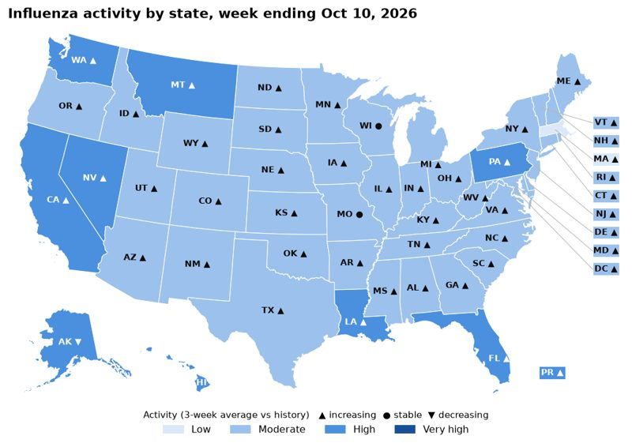

Public health surveillance · forecasting
US Respiratory Disease Surveillance
Weekly flu and COVID-19 hospital admissions for every state from CDC NHSN data, with outbreak detection and 1-4 week probabilistic forecasts.
Forecasts cut error by ~40% vs baseline (CDC's WIS metric); alerts lead state peaks by a median 7 weeks.
Updates every Friday